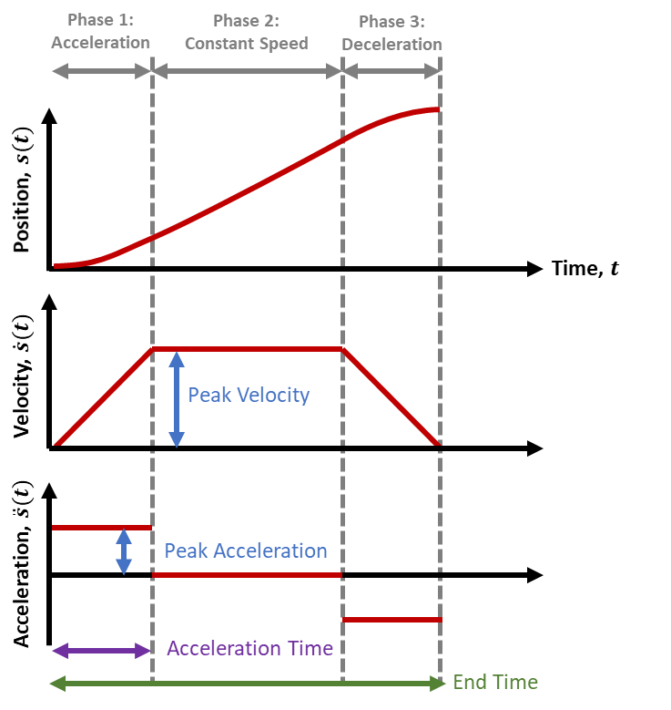

Introduction
When a joint is commanded to move directly from its current position to a target position, sending the target angle alone does not define how the robot should move between the two configurations. A position controller may attempt to reach the target as quickly as possible, resulting in abrupt changes in velocity and acceleration.
To address this, a trapezoidal velocity profile can be used to generate a smooth joint-space trajectory. The approach explicitly defines the acceleration, constant-velocity, and deceleration phases of the motion while providing control over the velocity and acceleration experienced by the joint.

Velocity Profile
The velocity profile is divided into three phases:
- 1. Acceleration
- 2. Constant Velocity / Cruise
- 3. deceleration
with $T = t_a + t_c + t_d$
where,
- $t_a$ - Acceleration phase time
- $t_c$ - Constant Velocity / Cruise phase time
- $t_d$ - deceleration phase time
for a symmetric profile $t_a = t_d$
Mathematical Formulation
Consider a joint moving from an initial position $q_{ini}$ to a final position $q_{fin}$. The required joint displacement is
\[ S = q_{fin} - q_{ini} \]The motion is described by the joint position, velocity, and acceleration:
\[ q(t), \qquad \dot{q}(t), \qquad \ddot{q}(t) \]The trajectory starts and ends with zero velocity:
\[ \dot{q}(0) = 0, \qquad \dot{q}(T) = 0 \]The velocity profile is characterized by a maximum velocity $V_{max}$ and a maximum acceleration $A_{max}$. For a symmetric trapezoidal profile, the acceleration and deceleration durations are equal:
\[ t_a = t_d \]Therefore, the total trajectory time is
\[ T = t_a + t_c + t_d \]The total displacement is obtained from the area under the velocity-time profile:
\[ S = \frac{1}{2}V_{max}t_a + V_{max}t_c + \frac{1}{2}V_{max}t_d \]Since $t_a = t_d$, this becomes
\[ S = V_{max}(t_a + t_c) \]These relationships provide the common mathematical foundation for both the time-based and velocity-based trajectory generation methods.
Acceleration Phase
During the acceleration phase, the joint starts with zero velocity and accelerates at a constant acceleration $A_{max}$.
\[ \ddot{q}(t) = A_{max} \]Integrating acceleration gives the velocity:
\[ \dot{q}(t) = A_{max}t \]Integrating the velocity gives the joint position:
\[ q(t) = q_{ini} + \frac{1}{2}A_{max}t^2 \]At the end of the acceleration phase, $t=t_a$, the velocity reaches $V_{max}$:
\[ V_{max}=A_{max}t_a \]Therefore, the acceleration phase ends at the position
\[ q_a=q_{ini}+\frac{1}{2}A_{max}t_a^2 \]Using $V_{max}=A_{max}t_a$, this can also be written as
\[ q_a=q_{ini}+\frac{1}{2}V_{max}t_a \]Constant-Velocity Phase
During the cruise phase, the joint moves at a constant velocity $V_{max}$. Therefore, the acceleration is zero:
\[ \ddot{q}(t)=0 \]The velocity remains constant:
\[ \dot{q}(t)=V_{max} \]The cruise phase begins at $t=t_a$ from the position $q_a$. Therefore, the position during this phase is
\[ q(t)=q_a+V_{max}(t-t_a) \]At the end of the cruise phase, $t=t_a+t_c$, the joint reaches the position $q_c$:
\[ q_c=q_a+V_{max}t_c \]Substituting the expression for $q_a$:
\[ q_c = q_{ini} + \frac{1}{2}V_{max}t_a + V_{max}t_c \]Deceleration Phase
During the deceleration phase, the joint decelerates at a constant acceleration of $-A_{max}$:
\[ \ddot{q}(t)=-A_{max} \]Let the time elapsed since the beginning of deceleration be
\[ \tau=t-(t_a+t_c) \]The velocity during deceleration is therefore
\[ \dot{q}(t)=V_{max}-A_{max}\tau \]Integrating the velocity from the position $q_c$ reached at the end of the cruise phase gives
\[ q(t) = q_c + V_{max}\tau - \frac{1}{2}A_{max}\tau^2 \]At the end of the deceleration phase, $\tau=t_d$. Since the joint must come to rest at the final position:
\[ \dot{q}(T)=0 \]Therefore,
\[ V_{max}=A_{max}t_d \]For the symmetric profile where $t_a=t_d$, the velocity and acceleration relationships remain consistent across the acceleration and deceleration phases.
Time-Based Trajectory Generation
In the time-based formulation, the total trajectory duration $T$ is specified as the input. The required maximum velocity and acceleration are then calculated from the required displacement.
For a symmetric trapezoidal profile:
\[ t_a = t_d \]The total trajectory time is therefore
\[ T = t_a + t_c + t_d \] \[ T = 2t_a + t_c \]Rearranging gives the cruise time:
\[ t_c = T - 2t_a \]The total displacement is equal to the area under the velocity-time profile:
\[ S = \frac{1}{2}V_{max}t_a + V_{max}t_c + \frac{1}{2}V_{max}t_d \]Since $t_a=t_d$:
\[ S = V_{max}t_a + V_{max}t_c \] \[ S = V_{max}(t_a+t_c) \]Substituting $t_c=T-2t_a$:
\[ S = V_{max}(t_a+T-2t_a) \] \[ S = V_{max}(T-t_a) \]Therefore, the maximum velocity required to complete the motion within the specified time is
\[ \boxed{ V_{max} = \frac{S}{T-t_a} } \]During the acceleration phase:
\[ V_{max}=A_{max}t_a \]Therefore, the required maximum acceleration is
\[ \boxed{ A_{max}=\frac{V_{max}}{t_a} } \]Velocity-Based Trajectory Generation
In the velocity-based formulation, the maximum velocity $V_{max}$ and maximum acceleration $A_{max}$ are specified as the inputs. The corresponding phase durations and total trajectory time are then calculated from the required displacement.
During the acceleration phase, the velocity increases from zero to $V_{max}$. Therefore,
\[ V_{max}=A_{max}t_a \]Solving for the acceleration time:
\[ \boxed{ t_a=\frac{V_{max}}{A_{max}} } \]For a symmetric profile:
\[ t_d=t_a \]The displacement is given by the area under the velocity profile:
\[ S=V_{max}(t_a+t_c) \]Therefore, the cruise time is
\[ \boxed{ t_c=\frac{S}{V_{max}}-t_a } \]Finally, the total trajectory time is
\[ \boxed{ T=t_a+t_c+t_d } \]Thus, unlike the time-based formulation, where the total trajectory time is specified first, the velocity-based formulation determines the total motion time from the selected velocity and acceleration limits.
Triangular Velocity Profile
A trapezoidal profile assumes that the joint reaches the specified maximum velocity $V_{max}$. However, for a sufficiently small displacement, there may not be enough distance to reach $V_{max}$ before deceleration must begin.
In this case, the cruise phase disappears:
\[ t_c=0 \]The velocity profile therefore becomes triangular, consisting only of acceleration and deceleration phases.
For a symmetric triangular profile:
\[ t_a=t_d \]The displacement is the area under the triangular velocity profile:
\[ S=V_p t_a \]where $V_p$ is the peak velocity reached during the motion. Since
\[ V_p=A_{max}t_a \]substituting gives
\[ S=A_{max}t_a^2 \]Therefore, the acceleration time is
\[ \boxed{ t_a=\sqrt{\frac{S}{A_{max}}} } \]and the peak velocity becomes
\[ \boxed{ V_p=\sqrt{S A_{max}} } \]The condition for selecting the triangular profile is
\[ \boxed{ V_p < V_{max} } \]If the calculated peak velocity is less than the specified maximum velocity, the joint cannot reach $V_{max}$ and a triangular profile must be used instead of a trapezoidal profile.
Application to Manipulator Motion
The mathematical formulation described above provides a general framework for generating smooth joint-space trajectories. In the implementation, the same formulation can be applied independently to multiple joints while maintaining a synchronized motion duration.
The trajectory generator was implemented for a 7-joint robotic manipulator, where the initial joint configuration is obtained from the measured joint states and the desired joint configuration is provided as the target. The individual joint displacements are scaled with respect to the largest displacement so that all joints reach their respective target positions simultaneously.